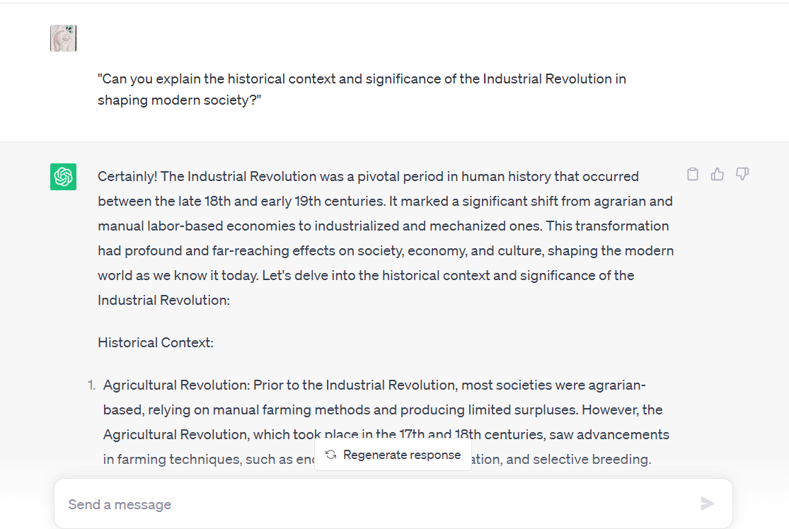
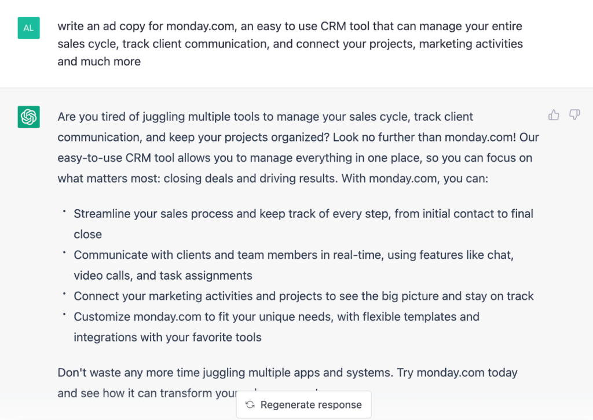
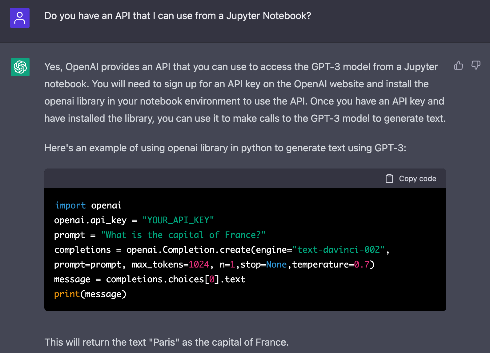

In recent years, Chat GPT has emerged as a groundbreaking technology, transforming the way we interact with
artificial intelligence. As with any powerful tool, it is essential
to learn how to use it correctly to maximize its potential. In this blog, we will explore the best practices
for utilizing Chat GPT effectively, while also highlighting common mistakes that people make along the way.
Context plays a pivotal role in generating meaningful responses. When interacting with Chat GPT, ensure you provide sufficient context and background information to frame your questions or prompts accurately. This helps the model comprehend the nuances and deliver more contextually appropriate answers.

Clearly Define Your Objectives
Before engaging with Chat GPT, it's crucial to have a clear understanding of your objectives. Ask yourself what specific information or assistance you seek from the model. By defining your goals, you can guide the conversation more effectively and obtain relevant and accurate responses.

Be Specific and Concise
To avoid ambiguity, it is essential to be specific and concise in your queries. Chat GPT performs best when given clear instructions or questions. Break down complex inquiries into smaller, more manageable parts, making it easier for the model to understand and respond accurately.

Experiment and Iterate
Chat GPT is a powerful tool that learns from human interactions. To achieve optimal results, don't hesitate to experiment and iterate. If the initial response is not what you expected, consider rephrasing your question, adjusting the input format, or refining the context. The more you engage with the model and fine-tune your approach, the better the outcomes will be.

Use System Messages Effectively
System messages are a way to guide the behavior of Chat GPT. By using them strategically, you can set expectations, provide instructions, or establish a roleplay scenario. System messages can help steer the conversation and influence the model's responses, leading to more desired outcomes.

Exercise Caution with Sensitive Information
While Chat GPT is a remarkable tool, it's important to exercise caution when sharing sensitive or personal information. As an AI model, it doesn't have a memory of past interactions unless explicitly provided. Avoid sharing personally identifiable information or confidential data that could compromise your privacy or security.
Common Mistakes to Avoid
Overly Complex Prompts
Using convoluted or overly complex prompts can confuse Chat GPT, leading to inaccurate or irrelevant responses. Keep your prompts simple, straightforward, and easy to understand.
.png)
Lack of Context
Insufficient context can result in vague or incomplete responses. Always provide enough background information for the model to comprehend the desired context accurately.
.png)
Blindly Trusting the Output
While Chat GPT is highly advanced, it is still an AI model and can occasionally produce incorrect or misleading answers. Always evaluate and verify the responses provided, particularly for critical or sensitive matters.
Ignoring Ethical Guidelines
When using Chat GPT, it is important to adhere to ethical guidelines and avoid promoting harmful or discriminatory content. Treat the model with respect and use it responsibly to foster positive and inclusive interactions.
.png)
Harnessing the power of Chat GPT requires a thoughtful and mindful approach. By clearly defining your objectives, providing context, being specific, and using system messages effectively, you can maximize the value of your interactions. However, it is crucial to remember the potential pitfalls and avoid common mistakes such as overly complex prompts or blindly trusting the output. By following these guidelines, you can unlock the true potential of Chat GPT and enhance your AI-assisted conversations.
Written on 2023-04-20
Featured Post

The Powerful Connection between Exercise and Mental Well-being
The Teacher-Student Relationship: A Game Changer in Education

Mastering a New Skill: A Year of Learning Experiments

10 Book Reading Habits to Cultivate for a Lifetime of Learning and Enjoyment